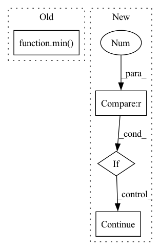

Pattern ID :24208
Before Change
if self.adaptive_number_ratio > 0:
n_masks = int(n_frames * self.adaptive_number_ratio)
n_masks = min( n_masks, self.max_n_time_masks)
else:
n_masks = self.n_time_masks
if self.adaptive_size_ratio > 0:After Change
ts = np.random.randint(0, self.T, size=(self.n_time_masks, 2))
for t, mask_end in ts:
// avoid randint range error
if len_spectro - t <= 0 :
continue
t_zero = random.randrange(0, len_spectro - t)
// avoids randrange error if values are equal and range is empty
if t_zero == t_zero + t:In pattern: SUPERPATTERN
Frequency: 3
Non-data size: 4
Instances Fragment ID: 75255599
Project Name: yeyupiaoling/masr
Commit Name: 441e7aa351a3e9476e58e9f53e055a3bbe96c364
Time: 2022-09-21
Author: yeyupiaoling@foxmail.com
File Name: masr/data_utils/augmentor/spec_augment.py
M Class Name: SpecAugmentor
N Class Name: SpecAugmentor
M Method Name: mask_time(3)
N Method Name: mask_time(3)
M Parent Class: object
N Parent Class: AugmentorBase
M File Name: masr/data_utils/augmentor/spec_augment.py
N File Name: masr/data_utils/augmentor/spec_augment.py
M Start Line: 155
M End Line: 177
N Start Line: 132
N End Line: 152
Before Change
print("Generation stopped at step {}".format(step))
break
raise
instrument = min( 128, event[0])
dur = (event[3] - 512) + (event[4] - 640) * 128
delta = (event[5] - 768) + (event[6] - 896) * 128
instruments[instrument].notes.append(
pm.Note(After Change
break
if event[0] == 129 or 128 in event[1:]:
continue
if event[0] == 131 or 130 in event[1:] :
continue
instrument = event[0]
pitch = event[1]
velocity = event[2]
dur = event[3] * 128 + event[4] Fragment ID: 75255605
Project Name: rick-mccoy/reformer-pytorch
Commit Name: 3411114d22e0bfcae2e106f5c82a3211da83f409
Time: 2020-02-29
Author: rickmccoy3141@gmail.com
File Name: datasets/music.py
M Class Name: AnonimousClass
N Class Name: AnonimousClass
M Method Name: roll_to_midi(1)
N Method Name: roll_to_midi(1)
M Parent Class:
N Parent Class:
M File Name: datasets/music.py
N File Name: datasets/music.py
M Start Line: 38
M End Line: 66
N Start Line: 44
N End Line: 60
Before Change
y_min = random.randint(y_min, y_min + height_diff)
if bbox_width <= self.width:
x_min = random.randint(max(x_min - width_diff, 0), min( img_w - self.height, x_min) )
else:
x_min = random.randint(x_min, x_min + width_diff)
After Change
y_max = 0
// Change ignore_idx to 0 for detecting bounding boxes
mask = masks[i].copy()
mask[mask == 255 ] = 0
// Detect bounding boxes
for j in np.unique(mask):
// Ignore the background
if j == 0:
continue
_x_min, _x_max, _y_min, _y_max = self._get_bounding_boxes(mask == j)
// Bug Fix: the object is out of current frame
if _x_min is None or _x_max is None or _y_min is None or _y_max is None: Fragment ID: 75255606
Project Name: hzxie/rmnet
Commit Name: e2461d774ceae905e367607c9101ab9d34fb5fa6
Time: 2020-04-20
Author: root@haozhexie.com
File Name: utils/data_transforms.py
M Class Name: RandomCrop
N Class Name: RandomCrop
M Method Name: __call__(3)
N Method Name: __call__(3)
M Parent Class: object
N Parent Class: object
M File Name: utils/data_transforms.py
N File Name: utils/data_transforms.py
M Start Line: 132
M End Line: 165
N Start Line: 139
N End Line: 176